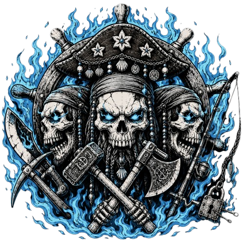

Esquadrão — P.A.Z
Águas Pacíficas
"A base silenciosa que fortalece a tripulação."
Esquadrão exclusivo para membros focados em PvE e jogadores que possuem pouco tempo disponível para jogar.
Objetivos do Esquadrão
- Coleta de Materiais Coletar materiais para crafts e evolução da P.A.Z. Os itens devem ser entregues para superiores ou cargos responsáveis pela distribuição.
- Grind de Boss Caçar Boss compatíveis com seus níveis e doar materiais importantes para a tripulação.
- Participação em Eventos PvE Auxiliar em eventos, farms coletivos e atividades PvE da P.A.Z.
Recompensas
- Apoio da P.A.Z Os membros recebem apoio moderado dos superiores com itens e auxílio para grind.
- Boss Rush e Level Rush Caso membros superiores estejam disponíveis, será possível solicitar ajuda para evolução rápida, farm ou caçada de Boss.
- Direito de Acionar Raid da Tripulação Caso encontrem itens raros, limitados ou sofram ataques inimigos, os membros possuem autorização para convocar toda a tripulação para combate.
- Sem Limite Offline Os membros podem permanecer no esquadrão mesmo ficando longos períodos sem jogar, desde que contribuam quando ativos. Caso o limite seja atingido, o membro poderá retornar assim que houver vaga.
Condições de Entrada
- Demonstrar interesse em participar
- Aprovação de um superior da P.A.Z
Punições
- Falta de Contribuição Membros que não contribuírem receberão avisos. Com 3 avisos, serão removidos do esquadrão e seguirão as regras normais de expulsão da P.A.Z.
- Uso Indevido de Raid Acionar Raid sem motivo ou por falso alarme resultará em aviso. Com 2 avisos do mesmo tipo, o membro será removido. Caso seja comprovado que existia ameaça real, não haverá punição.
- Chamadas Excessivas para Boss Rush ou Level Rush Os membros têm direito de solicitar ajuda, porém devem aguardar resposta dos disponíveis. Chamados insistentes gerarão avisos. Com 3 avisos, o membro será removido.